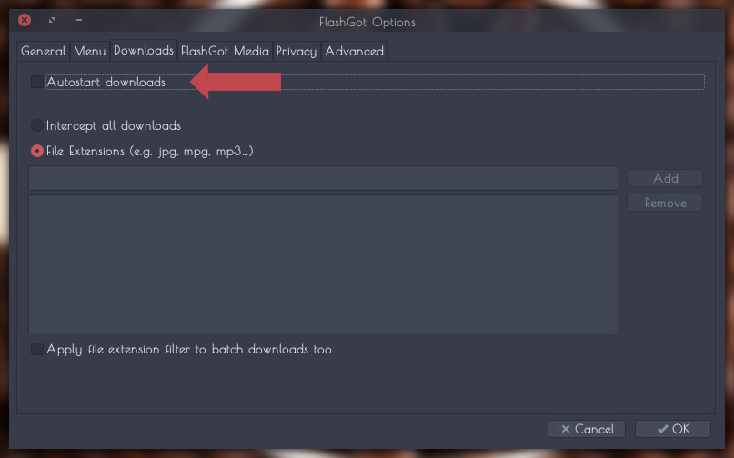

Firefox Integration
First,Install Flashgot From This Link
Then In Flashgot Setting Open Prefrences And Add The "Persepolis Download Manager"
In The Executable Path For GNU/LINUX Type This:
/usr/bin/persepolis
And For Mac OS X Type :
/usr/local/bin/persepolis
In The Command Line Argument Template,Write This:
[--link URL][--name FNAME][--referer REFERER][--headers HEADERS][--agent UA][--cookie COOKIE]

In The Advanced Tab,Disable Automatic Download Manager Detection
Also In Flashgot Media Tab Select Persepolis Download Manager

Disable Autostart Downloads
you can use flashgot for download from youtube , ...